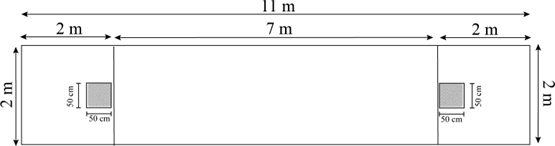

Origem do jogo
O jogo do osso, também conhecido como Tava ou Taba, é considerado um dos jogos mais antigos da humanidade, com raízes na Ásia e registros também na Europa, sendo possivelmente relacionado às práticas do antigo Império Persa e da Grécia.
Chegou ao sul da América com os espanhóis, por volta de 1620, difundindo-se na região do Rio da Prata e tornando-se tradicional no Rio Grande do Sul, Argentina e Uruguai.
O jogo utiliza o osso do garrão do boi, o astrágalo, e consiste em arremessá-lo sobre uma cancha plana de terra.

Estrutura da cancha utilizada no jogo de tava.Como acontecem as jogadas
As jogadas são determinadas conforme a forma como a tava cai. Quando o osso se fixa ao solo em uma posição específica, com uma extremidade cravada, ocorre a chamada “sorte clavada”, valendo 2 pontos positivos, enquanto a “sorte corrida” vale 1 ponto positivo.
O oposto disso é o “culo”. Quando a posição favorece o lado inverso, temos o “culo clavado”, com 2 pontos negativos, ou o “culo corrido”, com 1 ponto negativo.
Sorte Clavada
Quando a tava se fixa corretamente no solo, garantindo 2 pontos positivos.
Sorte Corrida
Resultado positivo sem fixação completa, valendo 1 ponto.
Culo Clavado
Quando a queda favorece o lado oposto, gerando 2 pontos negativos.
Há ainda situações especiais, como quando a tava cai fora do picador: se der “culo”, os pontos são válidos; se der “sorte”, a jogada é válida, mas sem pontuação.
Cada jogador tem direito a 20 arremessos, divididos entre as duas extremidades da cancha.
As partidas são disputadas em equipe, com 3 a 4 participantes, e para a contagem de pontos valem as três maiores pontuações, descartando-se o pior resultado.
Em caso de empate, são realizados critérios de desempate com novos tiros de tava, podendo envolver disputas entre os melhores resultados de cada equipe ou sorteio para definição da ordem de jogadas.